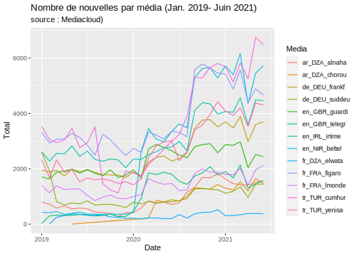

Chapter 7 Corpus
library(knitr)
library(dplyr)
library(quanteda)
library(data.table)
library(tidytext)
library(ggplot2)7.1 Objectives
The aim of this section is to separate states and world region and to evaluate the relative frequencies of world regions by media an through time.
7.2 Prepare data
qd<-readRDS("quanteda/corpus_worldgeo_V2.RDS")
qd$regs<-qd$tags
qd$regs<-gsub("ST_...","",qd$tags)
qd$regs<-gsub("CA_...","",qd$regs)
qd$nbregs<-ntoken(tokens(as.character(qd$regs)))
td<-tidy(qd)
hypercube <-function(qd = qd,
when = "date",
when_cut = "year",
who = "source",
where1 = "tags",
where2 = "tags")
{
# create data.table accroding to parameter chosen
don<-docvars(qd)
df<-data.table(id = docid(qd),
who = don[,who],
when = as.character(cut(don[,when],breaks=when_cut)),
where1 = don[,where1],
where2 = don[,where2])
# add code _no_ for empty fields
df$where1[df$where1==""]<-"_no_"
df$where2[df$where2==""]<-"_no_"
# unnest where1
df<-unnest_tokens(df,where1,where1,to_lower=F)
# unnest where2
df<-unnest_tokens(df,where2,where2,to_lower=F)
# define number of occurence by id
nb<-df[,.N,list(id)] %>% mutate(wgt = 1/N) %>% select(-N)
df<-df %>% left_join(nb)
rm(nb)
# Aggregate
hc<- df[,.( tags = .N, news=sum(wgt)) ,.(who, when,where1,where2)]
# Convert date to time
hc$when<-as.Date(hc$when)
# return hypercube
return(hc)
}
hc_reg <- hypercube(qd = qd,
when = "date",
when_cut = "months",
who = "source",
where1 = "regs",
where2 = "regs")
saveRDS(hc_reg,"hypercube/hc_reg.RDS")7.3 Distribution des nouvelles par média au cours du temps
hc_reg<-readRDS("hypercube/hc_reg.RDS")
hc_reg$OK<-as.factor(hc_reg$where1!="_no_")
levels(hc_reg$OK)<-c("Non","Oui")
month<-hc_reg[,.(nb<-sum(news)),.(when,who,OK)] %>%
dcast(formula = who+when~OK, value.var = "V1",fill = 0) %>%
mutate(Media=who,
Date = when,
Total=Non+Oui,
Frequence = Oui,
Pourcentage = 100*Frequence/Total) %>%
select(Media,Date, Total,Frequence, Pourcentage) %>%
filter(is.na(Date)==F, Date < as.Date("2021-07-01"))
#kable(month,digits=c(0,0,0,2),caption = "Parts des nouvelles mentionnant une macro-région")
ggplot(month,aes(x=Date,y=Total,color=Media)) +
geom_line(lwd=0.5) +
ggtitle("Nombre de nouvelles par média (Jan. 2019- Juin 2021)",
subtitle = "source : Mediacloud)" )
7.4 Fréquences des macro-régions par journal
hc_reg<-readRDS("hypercube/hc_reg.RDS")
hc_reg$OK<-as.factor(hc_reg$where1!="_no_")
levels(hc_reg$OK)<-c("Non","Oui")
med<-hc_reg[,.(nb<-sum(news)),.(who,OK)] %>%
dcast(formula = who~OK, value.var = "V1") %>%
mutate(Media = who,
Total=Non+Oui,
Frequence = Oui,
Pourcentage = 100*Frequence/Total) %>%
select(Media, Total,Frequence, Pourcentage)
tot<-med[1,]
tot$Media<-"Total"
tot$Total<-sum(med$Total)
tot$Frequence<-sum(med$Frequence)
tot$Pourcentage<-100*tot$Frequence/tot$Total
tabres<-rbind(med,tot)
kable(tabres,digits=c(0,0,0,2),caption = "Parts des nouvelles mentionnant une macro-région")| Media | Total | Frequence | Pourcentage |
|---|---|---|---|
| ar_DZA_alnaha | 32690 | 525 | 1.61 |
| ar_DZA_elkahb | 53401 | 509 | 0.95 |
| de_DEU_frankf | 86802 | 2203 | 2.54 |
| de_DEU_suddeu | 34858 | 1186 | 3.40 |
| en_GBR_guardi | 75064 | 1711 | 2.28 |
| en_GBR_telegr | 37122 | 967 | 2.60 |
| en_IRL_irtime | 104956 | 2226 | 2.12 |
| en_NIR_beltel | 97861 | 1172 | 1.20 |
| fr_FRA_figaro | 124092 | 3406 | 2.74 |
| fr_FRA_lmonde | 47888 | 1791 | 3.74 |
| tr_TUR_cumhur | 128715 | 2593 | 2.01 |
| tr_TUR_yenisa | 92575 | 2630 | 2.84 |
| Total | 916024 | 20919 | 2.28 |
-Commentaire : Sur un total de 916024 titres de nouvelles, 20619 contenaient au moins une macro-région, ce qui représente une proportion de 2.28% soit environ une nouvelle sur cinquante. Cette proportion varoe de 1 à 4% selon les journaux.
7.5 Fréquence des macro-régions par mois
hc_reg<-readRDS("hypercube/hc_reg.RDS")
hc_reg$OK<-as.factor(hc_reg$where1!="_no_")
levels(hc_reg$OK)<-c("Non","Oui")
month<-hc_reg[,.(nb<-sum(news)),.(when,OK)] %>%
dcast(formula = when~OK, value.var = "V1") %>%
mutate(Date = when,
Total=Non+Oui,
Frequence = Oui,
Pourcentage = 100*Frequence/Total) %>%
select(Date, Total,Frequence, Pourcentage) %>%
filter(is.na(Date)==F, Date < as.Date("2021-07-01"))
kable(month,digits=c(0,0,0,2),caption = "Parts des nouvelles mentionnant une macro-région")| Date | Total | Frequence | Pourcentage |
|---|---|---|---|
| 2019-01-01 | 22301 | 440 | 1.97 |
| 2019-02-01 | 19120 | 382 | 2.00 |
| 2019-03-01 | 19572 | 490 | 2.50 |
| 2019-04-01 | 19164 | 448 | 2.34 |
| 2019-05-01 | 20404 | 525 | 2.57 |
| 2019-06-01 | 18726 | 467 | 2.49 |
| 2019-07-01 | 18823 | 498 | 2.65 |
| 2019-08-01 | 17471 | 332 | 1.90 |
| 2019-09-01 | 16138 | 281 | 1.74 |
| 2019-10-01 | 16076 | 390 | 2.43 |
| 2019-11-01 | 14848 | 304 | 2.05 |
| 2019-12-01 | 15263 | 326 | 2.14 |
| 2020-01-01 | 16684 | 391 | 2.34 |
| 2020-02-01 | 18764 | 426 | 2.27 |
| 2020-03-01 | 25632 | 573 | 2.24 |
| 2020-04-01 | 25703 | 544 | 2.12 |
| 2020-05-01 | 26096 | 553 | 2.12 |
| 2020-06-01 | 26849 | 568 | 2.12 |
| 2020-07-01 | 26307 | 643 | 2.44 |
| 2020-08-01 | 25513 | 569 | 2.23 |
| 2020-09-01 | 37023 | 1012 | 2.73 |
| 2020-10-01 | 40691 | 887 | 2.18 |
| 2020-11-01 | 41480 | 841 | 2.03 |
| 2020-12-01 | 40239 | 1125 | 2.80 |
| 2021-01-01 | 40145 | 931 | 2.32 |
| 2021-02-01 | 37853 | 834 | 2.20 |
| 2021-03-01 | 42793 | 1050 | 2.45 |
| 2021-04-01 | 32958 | 780 | 2.37 |
| 2021-05-01 | 40671 | 991 | 2.44 |
| 2021-06-01 | 40781 | 1107 | 2.71 |
ggplot(month,aes(x=Date,y=Pourcentage)) +
geom_line(col="red",lwd=0.5) +
geom_point(col="black") +
geom_smooth() +
ggtitle("Les macro-régions dans les nouvelles de presse quotienne (Jan. 2019- Juin 2021)",
subtitle = "12 médias de France, Allemagne, Turquie, Tunisie, Irlande et Royaume-Uni (source : Mediacloud)" )
7.6 Distribution des nouvelles sur les macro-régions par média au cours du temps
hc_reg<-readRDS("hypercube/hc_reg.RDS")
hc_reg$OK<-as.factor(hc_reg$where1!="_no_")
levels(hc_reg$OK)<-c("Non","Oui")
month<-hc_reg[,.(nb<-sum(news)),.(when,who,OK)] %>%
dcast(formula = who+when~OK, value.var = "V1",fill = 0) %>%
mutate(Media=who,
Date = when,
Total=Non+Oui,
Frequence = Oui,
Pourcentage = 100*Frequence/Total) %>%
select(Media,Date, Total,Frequence, Pourcentage) %>%
filter(is.na(Date)==F, Date < as.Date("2021-07-01"))
#kable(month,digits=c(0,0,0,2),caption = "Parts des nouvelles mentionnant une macro-région")
ggplot(month,aes(x=Date,y=Pourcentage,color=Media)) +
geom_smooth(lwd=0.6,fill=NA) +
ggtitle("Part des nouvelles sur les macro-régions par média (Jan. 2019- Juin 2021)",
subtitle = "source : Mediacloud" )